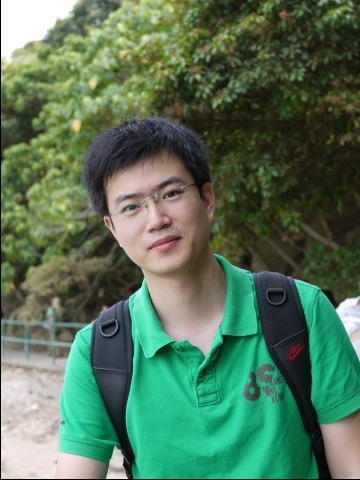

|
|
Dong LI (李东)
(CV)
Assistant
Professor
Faculty of Automation
Department
Guangdong University of Technology
Contact
Email:
leedong111@gmail.com
Office: Room 403, Engneering Building No.2, Guangdong University of Technology, Guangzhou, China, 510006
|
|
 |
|
|
|
|
Research Interests:
face recognition, feature extraction, and high-resolution image analysis,
large-scale image retrieval
I am looking for research collaboration and partners for pore-scale facial feature applications. Please
email me if you are interested.
|
|
|
|
I am an Assistant Professor in the
Faculty of Automation at Guangdong University of Technology (GDUT).
I received my PhD degree in the
Department of Electronic and
Information Engineering at
The Hong Kong Polytechnic University in
May 2014.
I worked
under the supervision of
Professor
Kin-Man (Kenneth) Lam.
My research interest lies in mobile computer vision, mobile
augmented reality (AR) and medical image analysis. My earlier work designed computer vision
and AR algorithms which
can run in real-time on low power mobile devices, such as
smartphones. More specifically, I focus on: 1) designing new
light-weight and robust algorithms, 2) adapting existing
algorithms to mobile CPU and/or GPU, for fundamental computer vision
components, such as feature extraction, recognition and tracking,
etc, 3) using mobile hetegeneous parallel computing , and 4) fusing
multi-model sensor data (e.g. accelerometer, gyroscope and
magnetometer). In the area of medical image analysis, I am
especially interested in image segmentation and registration.
My current projects include:
1. Differentiating identical twins based on facial images
2. 3D face reconstruction
3. Skin biometric
4. Facial landmark localizaiton
Previous projects:
1.
High quality and ultrafast feature desgin for mobile augmented
reality
2.
Accelerating SURF detector on mobile devices
3.
Mobile image retrieval
|
|
| |
Graduate students:
Selected Publications (Full
List)
Measurement of Intracranial
Aneurysm Growth
Qianyi Yu,
Xin Yang, Tim Cheng, F Liang, Aichi Chien
International Stroke Conference (Stroke),
2015 (accepted)
Acceptance rate: 10%
Accurate Vessel Segmentation with Progressive Contrast Enhancement
and Canny Refinement
Xin Yang,
Tim Cheng and Aichi Chien
Aisian
Conference on Computer Vision
(ACCV), 2014
Acceptance rate: 27%[pdf]
libLDB: A Library for
Extracting Ultrafast and Distinctive Binary Feature Description
Xin Yang, Chong Huang and
Tim Cheng
ACM
International Conference on Multimedia
(MM),
Open Source Software Competition, 2014.
Project Website
Geodesic Active Contours with Adaptive Configuration for Cerebral
Vessel and Aneurysm Segmentation
Xin Yang,
Tim Cheng and Aichi
Chien
International Conference on
Pattern Recognition (ICPR),
Stockholm, Sweden, Aug 24-28, 2014.
Local Difference Binary for Ultra-fast
and Distinctive Feature Description
Xin Yang and
Tim Cheng
IEEE Transaction on Pattern Recognition and Machine
Intelligence (TPAMI),
2013.
Impact factor: 4.795
LDB: An Ultra-Fast Feature for Scalable Augmened Reality on
Mobile Device
Xin Yang
and Tim Cheng
International Symposium on Mixed and
Augmented Reality
(ISMAR),
Atlanta, Georgia, Novermber 5-8, 2012.
Oral presentation;
Acceptance rate: 18% [pdf]
ISMAR Best Paper Nomination, 2012
Accelerating SURF Detector on
Mobile Devices
Xin Yang and Tim Cheng
ACM
International Conference on Multimedia
(MM),
Nara, Japan, October 29-31, 2012
Oral presentation;
Acceptance
rate: 20.2% [pdf]
|
|
|
|
|
|
Last update: April/26/2015 |
|
|